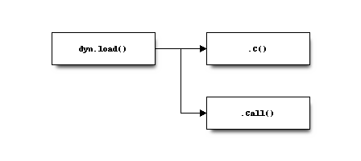

5. Hello World!¶
実際にHello Worldを表示してみる。
5.2. コード¶
#include <R.h>
#include <Rdefines.h>
#include <Rinternals.h>
SEXP hello() {
printf("Hello World!");
return(R_NilValue);
}

コンパイル後の.soファイルをdyn.loadで読み込み、.C、.Callで関数を実行する。
dyn.load("helloworld.so")
.C("hello")
.Call("hello")
(function() {
res <- .Call("hello")
})()
Cコード内では、R_NilValueを使っているが、.C関数ではNULLではなく、list()が返される。